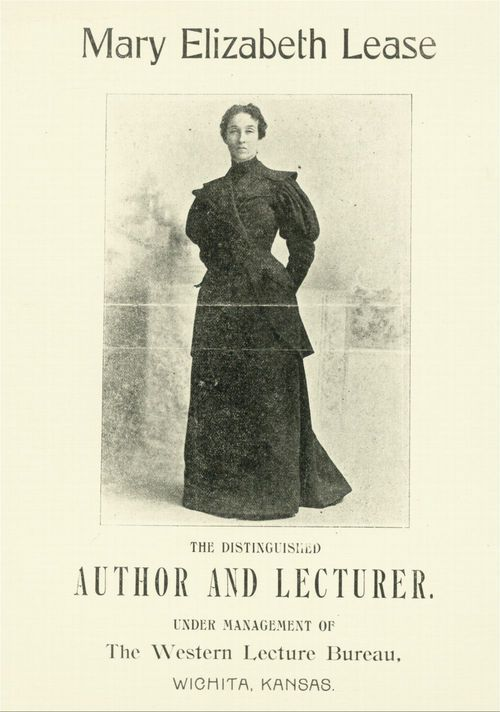
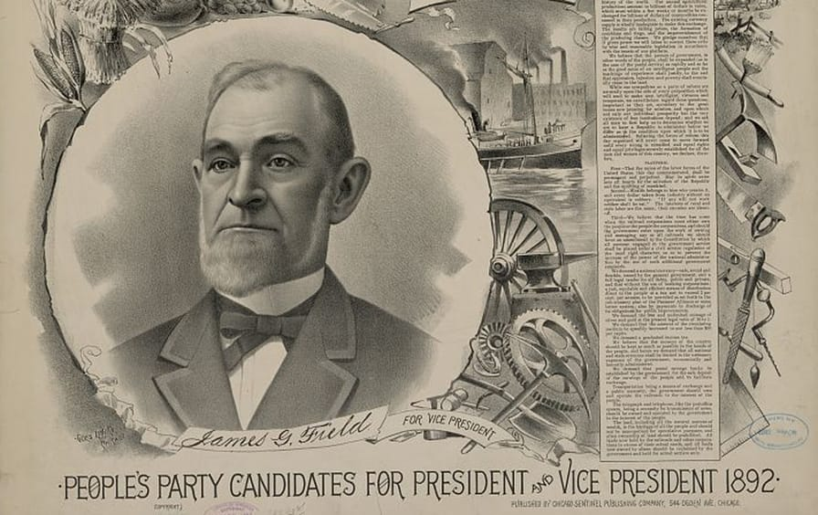
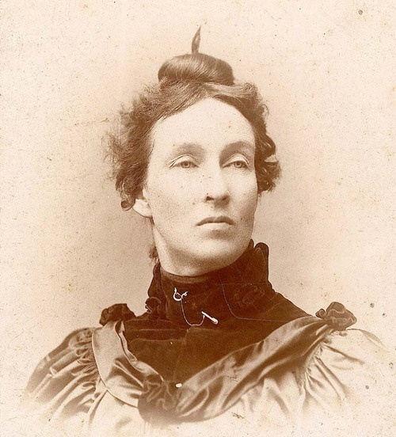
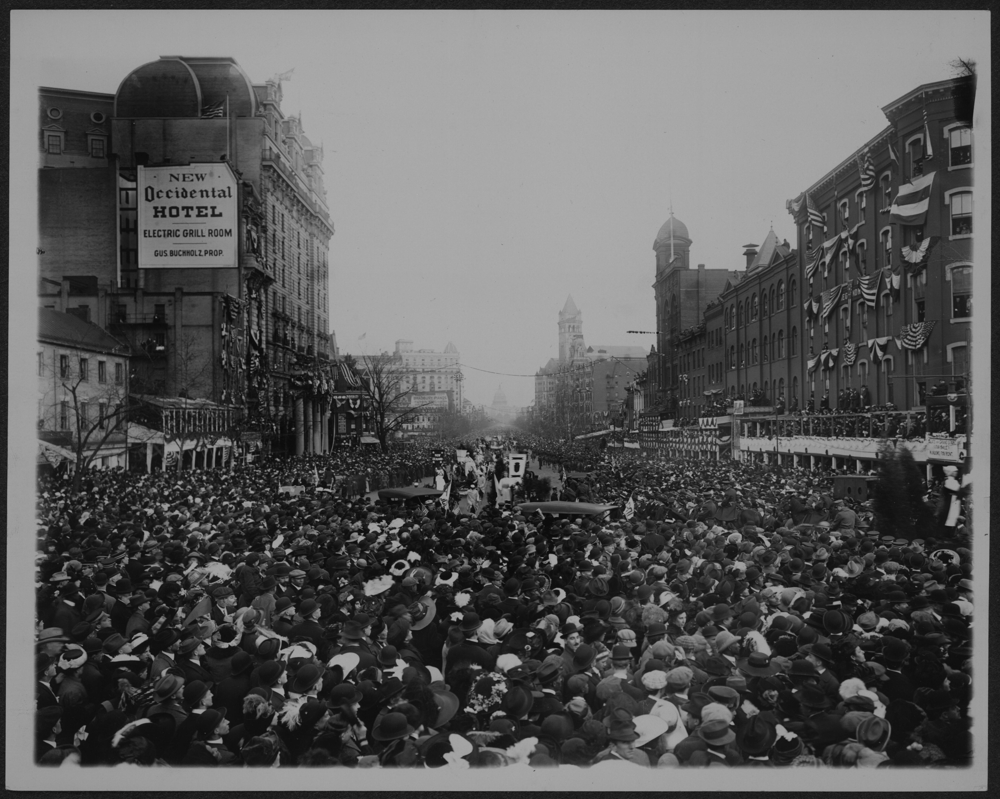
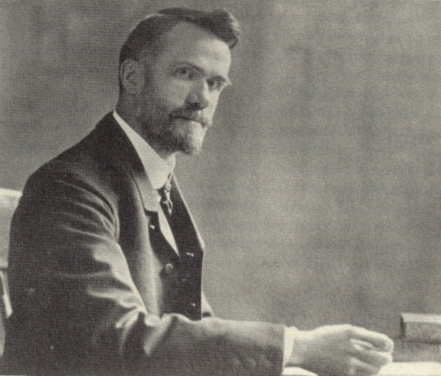
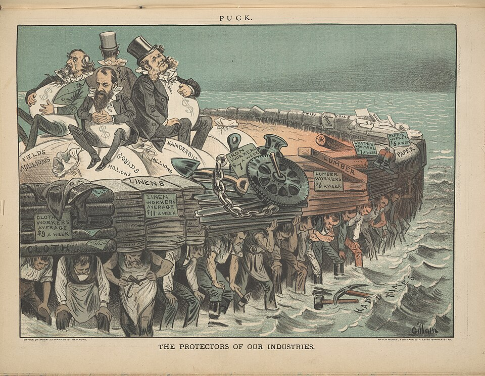
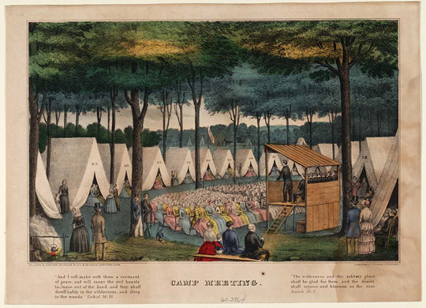
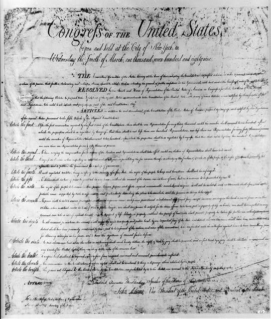

ESSENTIAL QUESTIONHow did ordinary people and religious movements push America to live up to its own ideals?
In 1892, a Kansas farmer named Mary Elizabeth Lease stepped onto a stage and told a crowd that farmers needed to "raise less corn and more hell." The audience exploded. She was a mother of four who had watched neighbors lose farms to railroad companies and banks while politicians did little.
In 1892, Mary Elizabeth Lease spoke to a large crowd. She was a Kansas farmer and a mother. She said farmers should "raise less corn and more hell." People cheered because many farmers felt ignored by banks, railroads, and politicians.
Between 1880 and 1920, millions of Americans decided that doing nothing was no longer an option. Farmers, factory workers, religious leaders, and women reformers demanded that America live up to its promises. Some called themselves Populists. Others called themselves Progressives. Together, they changed the country.
From 1880 to 1920, many Americans wanted change. Farmers, workers, religious leaders, and women reformers pushed the country to act. Some were Populists. Some were Progressives. Their work changed American life.
◆ ◆ ◆
THE FARMERS FIGHT BACK: THE POPULIST MOVEMENT

Mary Elizabeth Lease, Kansas Populist orator, circa 1890s. Wikimedia Commons.
After the Civil War, American farmers seemed like they should have been thriving. The country was growing fast, and cities needed food. But many farmers were going broke because the system was stacked against them.
After the Civil War, farmers seemed like they should do well. Cities needed food. But many farmers were losing money. The system worked against them.
Railroads charged high prices to ship crops. Banks charged punishing interest on loans for seeds and equipment. When crops were good, prices dropped. When crops failed, banks foreclosed. Farm families worked harder every year and still fell behind.
Railroads charged farmers too much to ship crops. Banks charged high interest. Good crops made prices fall. Bad crops made debt worse. Many families lost their farms.
By the late 1880s, farmers began organizing. They formed the Farmers' Alliance, a network of cooperatives and political clubs across the South and Midwest. By 1892, they launched the PopulistA movement that fought for ordinary farmers and workers. Party, also called the People's Party.
By the late 1880s, farmers organized. They formed the Farmers' Alliance. In 1892, they started the Populist Party. It was also called the People's Party.

Populist Party campaign material, 1892. Wikimedia Commons / Library of Congress.
The Populist platform was bold for its time. Populists wanted government ownership of railroads, a graduated income tax, direct election of senators, and more paper money backed by silver. These ideas challenged powerful banks, railroads, and political elites.
The Populists wanted big changes. They wanted the government to control railroads. They wanted rich people to pay higher taxes. They wanted voters to choose senators directly. They also wanted more money in circulation.
The Populists lost the 1896 presidential election. But many of their ideas survived. Over the next twenty years, several major reforms they demanded became law. Their party faded, but their arguments kept moving.
The Populists lost the 1896 election. But their ideas did not disappear. Many of their reforms later became law. Their party lost power, but their message lasted.
DID YOU KNOW

Mary Elizabeth Lease, Populist speaker. Wikimedia Commons.
Mary Elizabeth Lease became famous for the line "raise less corn and more hell," but she later said reporters may have twisted what she actually said. The sentence stuck anyway because it sounded exactly like the anger farmers felt: polite speeches had failed, so the countryside needed to get loud.
FAST FACTS
4AMENDMENTS IN 8 YEARS
6YEAR OLD WORKERS
1892OMAHA PLATFORM
1%OWNED MOST WEALTH
1913SENATORS BY VOTERS
"We meet in the midst of a nation brought to the verge of moral, political, and material ruin."
Ignatius Donnelly, Preamble to the Omaha Platform, People's Party, July 4, 1892
The Populists chose the Fourth of July to say that American democracy itself was broken, not just farmers' bank accounts.
◆ ◆ ◆
THE PROGRESSIVE ERA: WHEN REFORMERS CHANGED EVERYTHING
First edition of The Jungle by Upton Sinclair, 1906. Wikimedia Commons.
By 1900, the Populist Party was finished. But the problems that created it were not. Millions lived in crowded tenements. Children worked in mines and textile mills. Meatpacking plants sold unsafe food. Large companies crushed competitors and workers had little power.
By 1900, the Populist Party was gone. But the problems remained. Many people lived in crowded housing. Children worked in mines and mills. Some food was unsafe. Big companies had too much power.
A new generation of activists called themselves ProgressiveA reformer who wanted government to fix industrial problems.s. They believed government had the power and responsibility to fix problems caused by industrialization. Progressives came from cities, universities, churches, newspapers, and settlement houses.
New activists called themselves Progressives. They believed government should fix problems caused by industry. Many came from cities, churches, schools, newspapers, and settlement houses.
Progressives used investigative journalism. Writers called muckrakers exposed unsafe food, corrupt politics, child labor, and monopolies. Upton Sinclair's novel The Jungle described Chicago meatpacking in shocking detail. Congress soon passed food safety laws.
Progressives used journalism. Muckrakers wrote about unsafe food, corruption, child labor, and monopolies. Upton Sinclair wrote The Jungle. His book helped lead to food safety laws.
Lewis Hine, child workers in a textile mill, circa 1908-1910. Library of Congress.
One of the most powerful Progressive tools was the camera. Lewis Hine traveled the country documenting child labor for the National Child Labor Committee. His photographs showed children beside huge machines and in dangerous workplaces. The images made child labor impossible to ignore.
The camera became a reform tool. Lewis Hine photographed child workers. His pictures showed children near dangerous machines. The images helped people see the problem clearly.

Women's suffrage parade, Washington D.C., March 3, 1913. Library of Congress.
Women were at the center of nearly every Progressive Era reformA change made to fix a law, system, or institution.. Jane Addams worked with immigrant families at Hull House. Florence Kelley fought child labor. Ida B. Wells exposed lynching. Many of these women could not vote for most of the era, but they changed American law and public life.
Women led many Progressive reforms. Jane Addams helped immigrant families. Florence Kelley fought child labor. Ida B. Wells exposed lynching. Many women could not vote yet, but they changed the country.
◆ ◆ ◆
TWO WAYS OF SEEING POVERTY: SOCIAL GOSPEL VS. SOCIAL DARWINISM
Behind every argument about poverty is a deeper argument about why people are poor. During the Progressive Era, two opposite ideas competed for influence: Social Darwinism and the Social Gospel.
Arguments about poverty often start with one question: why are people poor? During the Progressive Era, two ideas fought for influence. One was Social Darwinism. The other was the Social Gospel.
SOCIAL DARWINISM
Society is a competition where the strongest survive. Poverty shows personal weakness. Government help only interferes with the natural order.
SOCIAL GOSPEL
Faith requires action against poverty and injustice. Poverty is often caused by unfair systems. Christians should help change those systems.

Walter Rauschenbusch, Baptist minister and Social Gospel leader, circa 1907. Wikimedia Commons.
Social Darwinists misused Charles Darwin's theory of evolution to explain economics. They argued that rich people were naturally stronger and poor people had simply lost the competition. This idea gave wealthy business leaders a moral excuse to oppose labor protections.
Social Darwinists used Darwin's ideas in the wrong way. They said rich people were stronger and poor people had lost. This helped wealthy leaders argue against worker protections.
The Social GospelA religious movement that fought poverty and injustice. movement pushed back. Walter Rauschenbusch argued that Christian faith required action in this world. Feeding the hungry, housing the poor, and protecting workers were not just political goals. They were moral duties.
The Social Gospel pushed back. Walter Rauschenbusch said faith should lead people to act. Helping the hungry, the poor, and workers was a moral duty.
This debate gave the Progressive movement moral energy. It also shaped arguments that still appear whenever Americans debate whether poverty is mainly a personal failure or a system problem.
This debate gave reformers moral energy. It still matters when people argue about poverty. Is poverty a personal problem, or is it caused by unfair systems?
ART SPOTLIGHT

The Protectors of Our Industries, Puck magazine political cartoon, 1883. Wikimedia Commons.
This cartoon turns the economy into a human pyramid: workers at the bottom hold up the wealthy men above them. That was the whole argument in one picture. Reformers wanted students, voters, and workers to see that inequality was not invisible; it was built into the shape of the system.
"Whoever sets any bounds for the reconstructive power of the religious life over the social order, limits the redemption of Jesus Christ."
Walter Rauschenbusch, Christianity and the Social Crisis, 1907
Rauschenbusch was telling churches that they could not stay silent about poverty and injustice.
◆ ◆ ◆
AMERICA'S RELIGIOUS EARTHQUAKES: THE GREAT AWAKENINGS

Left: George Whitefield, First Great Awakening preacher. Right: Second Great Awakening camp meeting. Wikimedia Commons.
Long before the Populists and Progressives, religious revival movements changed American politics. Historians call these waves the Great Awakenings. They pushed people to think about equality, sin, reform, and personal responsibility in new ways.
Long before the Populists and Progressives, religious revivals changed American life. These were called the Great Awakenings. They made people think about equality, sin, reform, and responsibility.
The First Great Awakening spread through the colonies in the 1730s and 1740s. Preachers like George Whitefield told crowds that salvation was personal and emotional. If every soul was equal before God, some people began to ask why people were not equal before the law.
The First Great Awakening happened in the 1730s and 1740s. Preachers said faith was personal. They said every soul mattered. This helped people ask why people were not equal under the law.
The Second Great Awakening spread from about 1800 to 1840. It helped fuel abolition, temperance, education reform, and women's rights. Many reformers believed that if slavery was a sin, Christians had a duty to end it.
The Second Great Awakening happened from about 1800 to 1840. It helped inspire the fight against slavery. It also supported temperance, schools, and women's rights.

The Bill of Rights, original document. Wikimedia Commons.
These movements also raised questions about religious libertyThe right to practice any religion, or no religion.. The First Amendment protects free exercise of religion and blocks the government from creating an official religion. This double protection has shaped American debates ever since.
These movements also raised questions about religious liberty. The First Amendment protects people's faith. It also stops the government from creating an official religion.
◆ ◆ ◆
PRIMARY SOURCE MOMENT
"We meet in the midst of a nation brought to the verge of moral, political, and material ruin."
Ignatius Donnelly, Preamble to the Omaha Platform, People's Party, July 4, 1892
The Populists used dramatic language because they believed democracy itself was being damaged by concentrated wealth and power.
1. What problem does this source say is harming the country?
2. How does this source connect to the essential question about ordinary people pushing America to live up to its ideals?
THEN AND NOW
REFORM MOVEMENTS BEGIN WHEN ORDINARY PEOPLE DECIDE THAT POWERFUL SYSTEMS ARE NOT TOO BIG TO CHALLENGE.
1913
Women march for voting rights in Washington, D.C., 1913.
TODAY
Workers organize publicly for labor rights.
The signs look different, but the posture is familiar: people step into public view when private suffering has become a public problem.